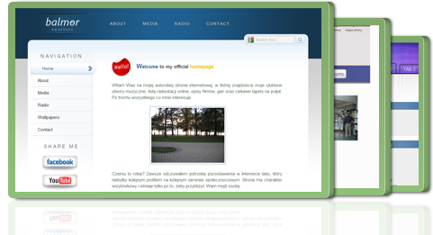
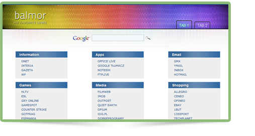

Welcome to 'balmor' the online portfolio of Damian Duda. I'm Graphic & Web Designer
If you like simple, clean web design and you're looking for quality, then you have come to the right place! Have a look at my work and enjoy!

DESIGN
attention to detail
I create and build beautiful websites that are functional with clean HTML5 and CSS3 markup.
USABILITY
user interface design
I specialize in crafting websites designs that are beautiful and user-friendly.
PASSION
love for the web
I have a passion for creating clean, professional, and strategic designs using the latest technology and trends.
